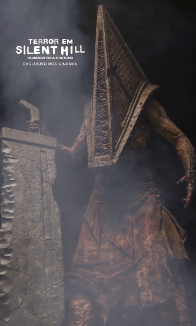
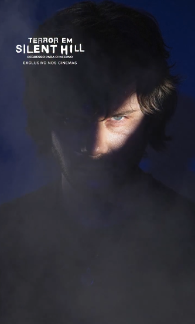
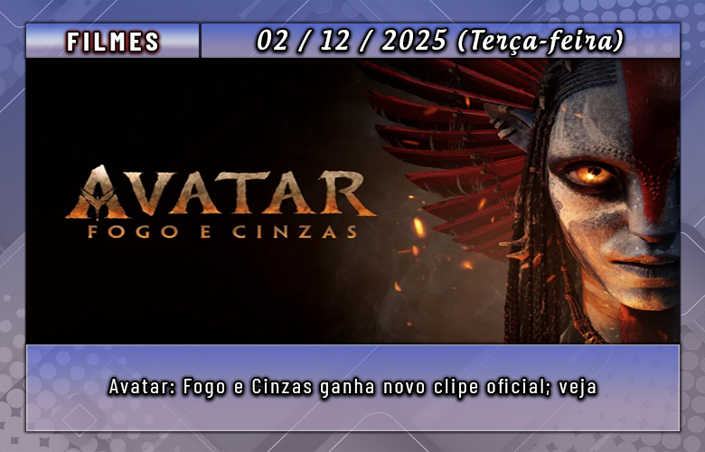

A adaptação cinematográfica do jogo, intitulada Terror em Silent Hill 3: Regresso Ao Inferno, acaba de divulgar quatro novos pôsteres de personagens, destacando figuras importantes como o temido vilão Pyramid Head.
Veja abaixo os pôsteres do filme:


Sobre a Adaptação:
Conteúdo do Filme: O primeiro trailer (exibido internamente em agosto) sugere que o longa adaptará diretamente a história do jogo Silent Hill 2, incluindo cenas icônicas como James olhando no espelho, a aparição do Pyramid Head, corredores do hospital e as enfermeiras.
Equipe de Produção: O projeto marca o retorno de talentos consagrados da franquia:
Direção e Roteiro: Christophe Gans, que trabalhou no primeiro filme de Silent Hill.
Trilha Sonora: Akira Yamaoka, o compositor original dos games.
Elenco Principal: O terror é estrelado por Jeremy Irvine e Hannah Emily Anderson, e conta ainda com Evie Templeton, Pearse Egan, Eve Macklin, Alana Maria, Slavisa Ivanovic, Melissa Graham e Emily Carding.
Sinopse:
O enredo acompanha James, que recebe uma carta misteriosa que o atrai de volta a Silent Hill, procurando por seu amor perdido. Ao chegar, ele se depara com a cidade irreconhecível, dominada por uma força maligna. Enquanto enfrenta criaturas aterrorizantes, James começa a duvidar de sua própria sanidade e precisa lutar contra a escuridão para tentar resgatar sua amada.
Datas de Lançamento:
Estados Unidos: 23 de janeiro de 2026.
Brasil: 19 de março de 2026.

Avatar: Fogo e Cinzas, continuação direta de Avatar: O Caminho da Água, recebeu um novo clipe promocional divulgado pouco antes de sua estreia.
Confira:
Detalhes da produção:
O produtor Jon Landau comentou sobre as novas tribos que serão introduzidas na trama:
“Existem humanos bons e ruins — e isso também vale para os Na’vi — mas, muitas vezes, as pessoas não se enxergam como vilãs. O que leva alguém a se tornar mau? Talvez existam elementos em Pandora que ainda desconhecemos.”
A princípio, a saga estava planejada para ter quatro filmes, mas em 2016 James Cameron confirmou a produção de um quinto longa.
Avatar: Fogo e Cinzas chega aos cinemas brasileiros em 18 de dezembro de 2025.
A conta oficial de Star Wars no Japão divulgou um novo trailer repleto de cenas inéditas de O Mandaloriano e Grogu. Confira abaixo!
Sobre O Mandaloriano e Grogu
O filme dará sequência direta aos acontecimentos da terceira temporada de The Mandalorian. A produção é dirigida por Jon Favreau, criador da série, e conta novamente com Dave Filoni — chefe criativo da Lucasfilm e responsável por Ahsoka — como roteirista e produtor.
Este será o primeiro longa de Star Wars a chegar às telonas desde Star Wars: Episódio IX – A Ascensão Skywalker, que encerrou a trilogia da Saga Skywalker. Apesar de ter ultrapassado a marca de US$ 1 bilhão em bilheteria, o episódio IX foi amplamente criticado por fãs e pela imprensa, o que manteve a franquia afastada dos cinemas por seis anos.
Nesse intervalo, a Lucasfilm continuou investindo em séries ambientadas no universo Star Wars, lançando novas produções regularmente. Entre elas, a que mais se destaca é The Mandalorian, cujo sucesso motivou a criação deste filme focado nos personagens principais. O elenco conta com Pedro Pascal, Sigourney Weaver e Jonny Coyne.
Pascal retorna como Din Djar
“Deadpool & Wolverine” foi um enorme sucesso nos cinemas em 2024, reunindo Ryan Reynolds e Hugh Jackman nos papéis icônicos que os fãs adoram.
Em entrevista recente a Kevin McCarthy (via The Playlist), o diretor Shawn Levy comentou sobre o futuro da franquia — e deixou claro que um quarto filme do Deadpool já está em seus planos.
“Sou fã de vários ‘terceiros filmes’ em trilogias”, disse ele. “Gosto muito de De Volta para o Futuro 3, O Retorno do Rei. Ultimato entregou uma experiência incrível ao público porque tivemos dez anos e muitos filmes construindo até aquele momento”.
Ele destacou também como histórias que carregam o peso de um legado acabam ganhando força naturalmente:
“Quando você conta algo que já tem uma conexão afetiva entre o público e os personagens, você já começa com vantagem”.
Levy comentou que enxerga Deadpool & Wolverine como uma grande carta de amor ao legado da antiga 20th Century Fox, aproveitando anos de construção narrativa.
O diretor também revelou que vem pensando bastante sobre como seria um novo filme do Deadpool — mas sem depender de nostalgia.
“Não sei sobre essa coisa de trilogias”, disse. “Quando penso: ‘como fazemos mais um filme do Deadpool?’… é complicado. Sequências são difíceis. Fiz três filmes de Uma Noite no Museu, e sempre foi trabalhoso. Depois que você vê como essa ‘máquina de sequências’ funciona, tudo fica meio estressante, porque você quer acertar”.
Vale lembrar que “Deadpool & Wolverine” está disponível no Disney+.
A Marvel Studios descreve o filme como seu maior erro já cometido — no melhor estilo Deadpool:
Wade Wilson vive uma vida civil bem sem graça, deixando para trás os dias como mercenário moralmente duvidoso. Mas quando seu universo enfrenta uma ameaça séria, ele é forçado a vestir o traje novamente… e a tentar convencer um Wolverine extremamente relutante a ajudá-lo.
E, claro, como o próprio Wade diria: “sinopses são absurdamente idiotas”.
A discussão sobre um possível Kill Bill 3 voltou a ganhar força na internet, mas não pelo caminho convencional que os fãs imaginavam. Enquanto o público segue esperando informações sobre o décimo — e potencialmente último — filme de Quentin Tarantino, o diretor surpreendeu ao retornar ao universo de Kill Bill através de um dos maiores fenômenos da cultura pop atual: Fortnite.
Na nova temporada do jogo, além de skins da Noiva no Passe de Batalha, foi lançado um curta animado inédito chamado A Vingança de Yuki, baseado em uma parte do roteiro original que havia sido descartada antes das filmagens. Esse trecho, considerado “intenso demais” para o filme, ganhou vida com o Unreal Engine 5 e tecnologia de captura de movimentos.
Com isso, Uma Thurman reprisa oficialmente o papel da Noiva pela primeira vez em mais de duas décadas, reacendendo discussões sobre uma possível continuação da franquia. Tarantino, por sua vez, admite que ainda possui ideias relacionadas ao universo, embora não confirme um novo longa.
O capítulo perdido renasce em Fortnite
Durante o evento de estreia em Los Angeles, Tarantino contou que o curta surgiu após a Epic Games procurá-lo para licenciar personagens no jogo. A conversa evoluiu rapidamente para algo maior, resultando no resgate do trecho perdido.
Kill Bill 3 é possível?
Quando perguntado sobre a chance de Kill Bill 3 finalmente acontecer, Tarantino foi cauteloso, mas reconheceu que ainda guarda conceitos que poderiam expandir a história. Um deles acompanha a origem de Bill, vivido por David Carradine, mostrando como ele foi influenciado por Esteban Vihaio, Hattori Hanzō e Pai Me. Essa narrativa nunca foi desenvolvida, mas permanece viva na mente do diretor e pode ser explorada futuramente — não necessariamente no cinema.
Assim, em vez de um Kill Bill 3, o próximo passo pode ser um prequel, seja em filme, série ou outro formato. E, como o curta em Fortnite demonstra, as possibilidades estão abertas.
Com Tarantino reforçando que seu décimo filme será o último da carreira, muitos fãs especulam que o futuro de Kill Bill pode migrar para a televisão. Uma minissérie explorando Bill, seus mentores e sua trajetória até liderar a Deadly Viper Assassination Squad ampliaria o universo sem contrariar o plano final do diretor.
Diante do cenário atual do streaming, um projeto escrito e dirigido por Tarantino certamente se tornaria um dos lançamentos mais aguardados do ano.